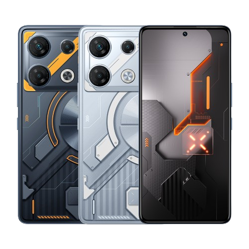
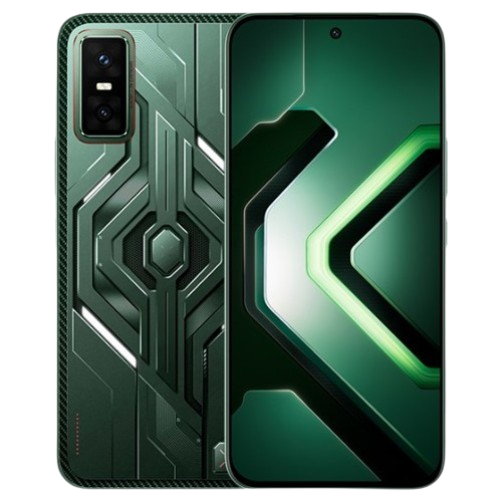

Produk Kami
Temukan berbagai produk Infinix yang sesuai dengan kebutuhan Anda.

INFINIX GT 10 Pro
INFINIX GT 10 Pro adalah HP gaming dengan desain cyberpunk yang unik dan lampu RGB di bagian belakang. Ditenagai chipset Dimensity 8050, HP ini mampu menjalankan game populer dengan lancar. Layar AMOLED 120Hz membuat tampilan lebih halus, sementara kamera utama 108 MP menghasilkan foto yang tajam. Cocok buat kamu yang cari HP gaming murah tapi tetap stylish.

INFINIX GT 30 Pro
INFINIX GT 30 Pro adalah versi lebih tinggi dengan performa yang jauh lebih kencang. Dibekali chipset Dimensity 8350 Ultimate, layar AMOLED 144Hz, dan RAM besar, HP ini cocok untuk gaming berat seperti PUBG, COD, atau Genshin Impact. Kamera 108 MP dan fitur gaming tambahan juga bikin pengalaman makin maksimal.

INFINIX GT 30
INFINIX GT 30 hadir sebagai penerus dengan performa lebih stabil untuk gaming harian. Menggunakan chipset Dimensity 7400, HP ini sudah mendukung layar AMOLED 144Hz yang sangat smooth. Baterai besar sekitar 5500 mAh juga bikin lebih tahan lama saat dipakai main game atau multitasking. Cocok untuk pengguna yang ingin performa kuat tapi tetap hemat.